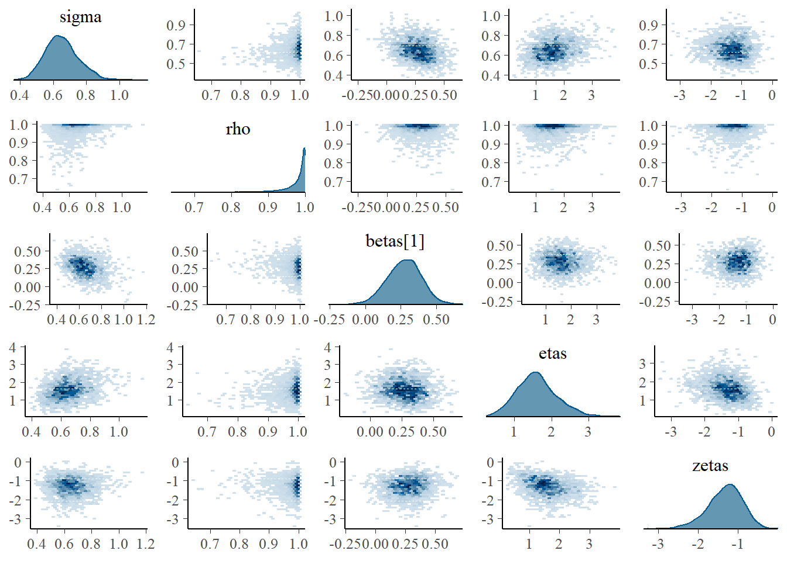
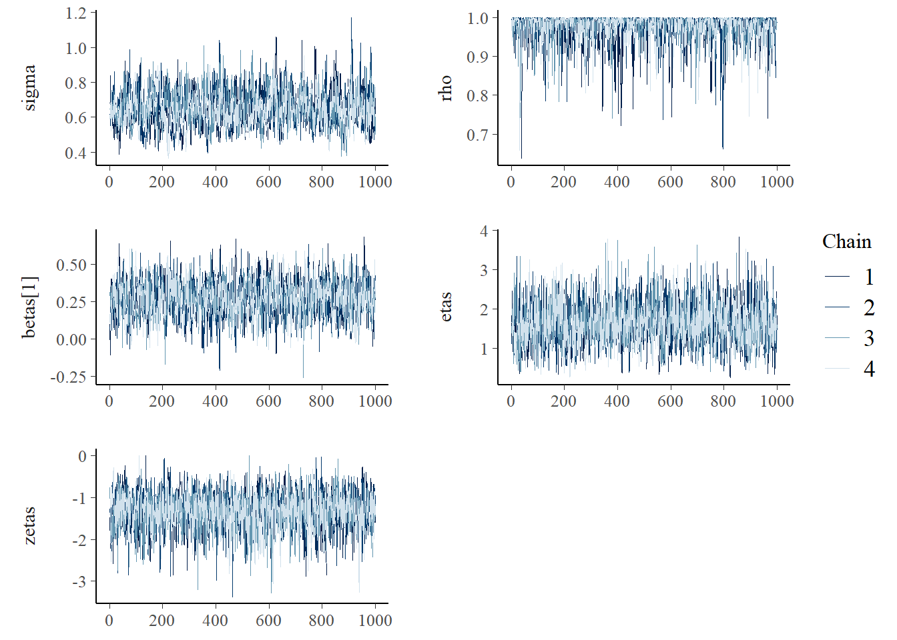

Chapter 7 SAR and CAR models
In this section, we model aerial data, which is data that occurs on a lattice or an irregular grid with a countable set of locations or nodes. The two most common models for aerial data are conditional autoregressive (CAR) and simultaneous autoregressive (SAR) models, both known for having sparse precision matrices. For a review of these models see Hooten, Ver Hoef, and Hanks (2019), Riebler et al. (2016), and for the relationship between them see Ver Hoef, Hanks, and Hooten (2018).
7.1 SAR models
Here we consider a SAR model built from the following relationship:
\[ \mathbf{x} = \mathbf{B}\mathbf{x} + \sigma\mathbf{Z}, \] where each element of the random vector \(\mathbf{x}\) corresponds to a node in the lattice and \(\mathbf{Z}\) is a vector of i.i.d. standard Gaussian noise. The matrix \(\mathbf{B}\) causes simultaneous autoregressions of each random variable on its neighbors, where two regions are considered to be neighbors if they share a common border. Hence, SAR models are typically added as spatially structured random effects in hierarchical models in many fields such as disease mapping, ecology, and econometrics. The diagonal elements of \(\mathbf{B}\) are 0 so that each node does not depend on itself. For simplicity, we assume \(\mathbf{B}=\rho\mathbf{W}\), where \(\mathbf{W}\) is a row standardized adjacency matrix and \(-1<\rho<1\) so that the resulting precision matrix is valid. We find that this parameterization is more interpretable and there is an analog with an AR(1) process. In an AR(1) process, the value of the process at a given time point is \(\rho\) multiplied by the value of the process at the previous time point plus Gaussian noise. In our SAR model, the value of a node is given by \(\rho\) multiplied by the average of the values of the neighbors plus Gaussian noise.
We end up with the system \(\mathbf{D}_{SAR}\mathbf{x} = \sigma\mathbf{Z}\), where \(\mathbf{D}_{SAR}=\mathbf{I}-\rho\mathbf{W}\). The equivalent model driven by NIG noise is then \(\mathbf{D}_{SAR}\mathbf{x} = \sigma\mathbf{\Lambda}\), where \(\mathbf{\Lambda}\) is i.i.d. standardized NIG noise with parameters \(\eta^\star\) and \(\zeta^\star\).
In this application, we will use the prior \(\rho \sim \mathcal{Unif}(0,1)\), where we restrict the model so that it only accounts for positive spatial dependence.
7.1.1 Libraries
library(spdep) # Columbus dataset
library(INLA)
library(sp) # Create Spatial polygons object for plotting
library(rgdal) # Read polygon data
library(leaflet) # Interactive widgets
library(leaflet.extras) # Fullscreen control for Leaflet widget
library(cmdstanr) # CmdStan R interface
library(posterior) # Process the output of cmdstanr sampling
library(bayesplot) # Pair and trace plots
library(ggplot2) # More plots
library(GIGrvg) # Evaluate density of a GIG distribution
source("files/utils.R") # Several utility functions
options(mc.cores = parallel::detectCores())7.2 Columbus dataset and model
The dataset consists of crime rates in thousands (\(y_i\)) in 49 counties of Columbus, Ohio, and can be found in the spdep R package. We will fit the following model:
\[
\mathbf{y}_{i}= \beta_0 + \beta_1 \text{HV}_i + \beta_2 \text{HI}_i + \sigma\mathbf{x}_i,
\]
where \(\text{HV}_i\) and \(\text{HI}_i\) are the average household value and household income for county \(i\), \(\mathbf{x}\) is a spatial effects SAR model.
data(columbus)
data <- columbus[,c("CRIME","HOVAL","INC")] # data
N <- nrow(data) # number of counties
map <- readOGR(system.file("shapes/columbus.shp", package="spData")[1]) # shape file containing the polygons## OGR data source with driver: ESRI Shapefile
## Source: "C:\R\library\spData\shapes\columbus.shp", layer: "columbus"
## with 49 features
## It has 20 fields
## Integer64 fields read as strings: COLUMBUS_ COLUMBUS_I POLYIDIn the next Leaflet widget, we show the crime rates and the two covariates.
We obtain next the adjacency matrix \(\mathbf{W}\).
nb_q <- poly2nb(map) # Construct neighbours list from polygon list
nb_W <- nb2listw(nb_q, style="B", zero.policy=TRUE) # Spatial weights for neighbours lists
W <- as.matrix(as(nb_W, "sparseMatrix")) # Adjacency matrix W
W <- diag(1/rowSums(W))%*%W # Row standardize adjacency matrix
v <- eigen(W)$values # Eigenvalues of adjacency matrixWe build the design matrix \(\mathbf{B}\) and the list to be passed to Stan next:
B <- cbind(rep(1,N),data[,c(2,3)]) #Design matrix
dat1 <- list(N = N,
N_covariates = 3,
y = data$CRIME,
B = B,
W = W,
v = eigen(W)$values, #Eigenvalues of W
thetaetas = 5,
thetazetas = 4)7.2.1 Gaussian fit
Note that the Gaussian log-likelihood for \(\mathbf{x}\) where \(\mathbf{D}\mathbf{x}=\mathbf{Z}\) is given by:
\[\log\pi(\mathbf{x}) \propto\log |\mathbf{D}| - 0.5\sum_{i=1}^n [\mathbf{D}\mathbf{w}]_i^2.\] Since \(\mathbf{y} = \mathbf{B}\boldsymbol{\beta} +\sigma_{\mathbf{x}}\mathbf{x}\), the spatial effects are given by \(\mathbf{x} = (\mathbf{y}-\mathbf{B}\boldsymbol{\beta})/\sigma_{\mathbf{x}}\) which we declare in the transformed parameters block. The determinant of \(\mathbf{D}\) is \(\sum_i \log(1-\rho v_i)\), where the \(v_i\)’s are the eigenvalues of \(\mathbf{W}\).
transformed parameters{
vector[N] X = (y - B*beta)/sigma; // Spatial effects
}
model{
matrix[N,N] D = add_diag(-rho*W, 1); // D = I - rho W;
target += -0.5*dot_self(D*X);
target += sum(log(1-rho*v)); // Log determinant of D
...
}model_stan_Gauss <- cmdstan_model('files/stan/GaussSAR2.stan')
fit_Gauss <- model_stan_Gauss$sample(data = dat1,
chains = 4,
iter_warmup = 1000,
iter_sampling = 1000)
fit_Gauss$save_object("files/fits/fit_columbus_Gauss2.rds")
fit_Gauss$cmdstan_diagnose() #No warningsLet us look at the summary:
fit_Gauss <- readRDS("files/fits/fit_columbus_Gauss2.rds")
knitr::kable(head(fit_Gauss$summary(),6), "simple", row.names = NA, digits=2)| variable | mean | median | sd | mad | q5 | q95 | rhat | ess_bulk | ess_tail |
|---|---|---|---|---|---|---|---|---|---|
| lp__ | -16.41 | -16.02 | 1.78 | 1.55 | -19.83 | -14.27 | 1 | 1630.88 | 2010.24 |
| sigma | 20.50 | 20.29 | 2.65 | 2.57 | 16.50 | 25.20 | 1 | 2986.27 | 2481.06 |
| rho | 0.36 | 0.36 | 0.19 | 0.21 | 0.05 | 0.67 | 1 | 1901.94 | 1251.32 |
| beta[1] | 63.56 | 63.67 | 10.76 | 10.35 | 45.36 | 80.69 | 1 | 2315.12 | 2221.33 |
| beta[2] | -0.30 | -0.29 | 0.19 | 0.19 | -0.62 | 0.02 | 1 | 3094.38 | 2327.45 |
| beta[3] | -1.19 | -1.20 | 0.70 | 0.69 | -2.34 | -0.05 | 1 | 2080.53 | 2148.89 |
7.2.2 NIG fit
The SAR model driven with NIG noise can be declared in Stan by just changing one line of code of the Gaussian Stan model. We set the last argument of modelNIG to 0 so that the determinant is not computed twice.
model{
matrix[N,N] D = add_diag(-rho*W, 1);
X ~ nig_model(D, etas, zetas, h, 0);
target += sum(log(1-rho*v)); // Log determinant of D
...
}model_stan_NIG <- cmdstan_model('files/stan/NIGSAR2.stan')
fit_NIG <- model_stan_NIG$sample(data = dat1,
chains = 4,
iter_warmup = 1000,
iter_sampling = 1000,
max_treedepth = 20,
adapt_delta = 0.999)
fit_NIG$save_object("files/fits/fit_columbus_NIG2.rds")
fit_NIG$cmdstan_diagnose() #4 out of 4000 iterations divergedThe posterior distributions for the regression coefficients were similar, and the posterior distributions of \(\eta^\star\) and \(\zeta^\star\) suggest some heavy-tailedness although no asymmetry.
fit_NIG <- readRDS("files/fits/fit_columbus_NIG2.rds")
knitr::kable(head(fit_NIG$summary(),8), "simple", row.names = NA, digits=2)| variable | mean | median | sd | mad | q5 | q95 | rhat | ess_bulk | ess_tail |
|---|---|---|---|---|---|---|---|---|---|
| lp__ | -62.05 | -61.75 | 2.46 | 2.43 | -66.55 | -58.62 | 1 | 951.97 | 1544.98 |
| sigma | 22.28 | 22.09 | 3.03 | 3.03 | 17.60 | 27.56 | 1 | 1998.27 | 1908.75 |
| rho | 0.38 | 0.39 | 0.19 | 0.22 | 0.06 | 0.71 | 1 | 2003.53 | 1421.08 |
| etas | 0.84 | 0.75 | 0.54 | 0.52 | 0.11 | 1.86 | 1 | 1837.81 | 1228.51 |
| zetas | -0.03 | -0.01 | 0.32 | 0.16 | -0.56 | 0.45 | 1 | 2105.61 | 1162.45 |
| beta[1] | 63.67 | 63.65 | 10.33 | 9.82 | 46.74 | 80.45 | 1 | 1874.01 | 2060.93 |
| beta[2] | -0.24 | -0.23 | 0.19 | 0.19 | -0.57 | 0.07 | 1 | 1771.66 | 2069.54 |
| beta[3] | -1.37 | -1.36 | 0.67 | 0.67 | -2.46 | -0.26 | 1 | 1644.77 | 2231.99 |
The posterior draws for \(\mathbf{V}\) can be generated based on eq. (2.5) and from the posterior draws of \(\mathbf{x}\), \(\eta^\star\), \(\zeta^\star\) and \(\rho\) as done next. We utilized the function VposteriorSAR located at files/utils.R. High values for \(V_i\) indicate that region \(i\) has a spike in the spatial effects, that were not captured by the covariates, and are usually too large to be modeled by a Gaussian distribution.
X <- as.matrix(as_draws_df(fit_NIG$draws("X")))[,1:N]
etas <- as.matrix(as_draws_df(fit_NIG$draws("etas")))[,1]
zetas <- as.matrix(as_draws_df(fit_NIG$draws("zetas")))[,1]
rho <- as.matrix(as_draws_df(fit_NIG$draws("rho")))[,1]
h <- rep(1,N)
V_post <- VposteriorSAR(X, rho, W, etas, zetas, h)In the next leaflet widget, we show the posterior mean and standard deviation of the spatial effects as well as the posterior mean of \(\mathbf{V}\).
7.3 CAR models
ICAR stands for the intrinsic conditional autoregressive process. The word “conditional” on ICAR is because the distribution of each node is defined conditionally on the values of the neighboring nodes:
\[ x_i|\mathbf{x_{-i}} \sim \mathcal{N}\left(\frac{1}{n_i}\sum_{j:j\sim i}x_j,\frac{\sigma^2}{n_i}\right), \]
where \(\mathbf{x_{-i}}\) is a vector containing all \(z_j\) except \(j \neq i\), \(j \sim i\) denotes the set of all unordered pairs of neighbors and \(n_i\) is the number of neighbors of node \(i\). The previous conditional structure leads to a GMRF with a precision matrix with a rank deficiency of 1, given by:
\[ Q_{i j}=\left\{\begin{array}{ll} -1, & i \text { is neighboring } j \\ n_i, & i=j \\ 0, & \text { else. } \end{array}\right. \] In Rue and Held (2005) this model was constructed based on the assumption of ‘independent’ increments: \[ x_i-x_j \sim \mathcal{N}(0, \sigma^2), \] where independent is written in brackets due to (hidden) linear constraints imposed by the more complicated geometry. The log probability density of \(\mathbf{x}\) for \(\sigma=1\) is given by:
\[ \log\pi(\mathbf{x}) \propto -\frac{1}{2}\sum_{i \sim j}(x_i-x_j)^2 \] For the NIG model extension, we assume that the ‘independent’ increments follow the more flexible NIG distribution.
7.3.1 Dataset and model
We will model the Scotland Lip cancer dataset using the previous ICAR model for the spatial effects. The Gaussian model implementation was taken from Morris (2019) who studied several parameterizations of this model and their implementation on Stan. Here we consider only the BYM2 parameterization (see Riebler et al. (2016)). The observed number of cancer cases at location \(i\) is given by:
\[y_i \sim \text{Poisson}(E_i \ RR_i)\] \[\log RR_i = \psi_i = x\beta + \sigma(\sqrt{1-\rho}\theta + \sqrt{\rho}\phi), \] where:
- \(E_i\) is the expected count
- \(RR_i\) is the relative risk at area \(i\)
- \(x\) is the design matrix
- \(\beta\) are the regression coefficients
- \(\sigma\) is the overall standard deviation
- \(\phi\) is an ICAR spatial component
- \(\theta\) are Gaussian heterogeneous effects
- \(\rho\in[0,1]\) measures how much of the variability comes from the ICAR component
For an explanation of the Stan implementation see Morris (2019). In this application, \(x\) only includes one covariate that indicates the proportion of the population engaged in agriculture, fishing, or forestry (AFF).
source("files/data/scotland_data.R")
y = data$y;
E = data$E;
K = 1;
x = 0.1 * data$x;
nbs = mungeCARdata4stan(data$adj, data$num);
N = nbs$N;
node1 = nbs$node1;
node2 = nbs$node2;
N_edges = nbs$N_edges;
#Build the adjacency matrix using INLA library functions
adj.matrix = sparseMatrix(i=nbs$node1,j=nbs$node2,x=1,symmetric=TRUE)
#The ICAR precision matrix (note! This is singular)
Q= Diagonal(nbs$N, rowSums(adj.matrix)) - adj.matrix
#Add a small jitter to the diagonal for numerical stability (optional but recommended)
Q_pert = Q + Diagonal(nbs$N) * max(diag(Q)) * sqrt(.Machine$double.eps)
# Compute the diagonal elements of the covariance matrix subject to the
# constraint that the entries of the ICAR sum to zero.
#See the inla.qinv function help for further details.
Q_inv = inla.qinv(Q_pert, constr=list(A = matrix(1,1,nbs$N),e=0))
#Compute the geometric mean of the variances, which are on the diagonal of Q.inv
scaling_factor = exp(mean(log(diag(Q_inv))))dat1 <- list(N = N,
N_edges = N_edges,
node1 = node1,
node2 = node2,
y = y,
K = 1,
x = as.matrix(x=x),
E = E,
scaling_factor = scaling_factor,
theta_etas = 10,
theta_zetas = 5)model_stan_Gauss <- cmdstan_model('files/stan/GaussPoissonCAR2.stan')
fit_Gauss <- model_stan_Gauss$sample(data = dat1,
chains = 4,
iter_warmup = 5000,
iter_sampling = 1000)
fit_Gauss$save_object("files/fits/fit_scotland_Gauss2.rds")
fit_Gauss$cmdstan_diagnose()fit_Gauss <- readRDS("files/fits/fit_scotland_Gauss2.rds")
knitr::kable(head(fit_Gauss$summary(),5), "simple", row.names = NA, digits=2)| variable | mean | median | sd | mad | q5 | q95 | rhat | ess_bulk | ess_tail |
|---|---|---|---|---|---|---|---|---|---|
| lp__ | 751.08 | 751.32 | 8.97 | 8.79 | 736.31 | 765.44 | 1.01 | 1120.53 | 2132.45 |
| beta0 | -0.21 | -0.21 | 0.13 | 0.13 | -0.41 | 0.00 | 1.00 | 2398.66 | 2957.29 |
| betas[1] | 0.36 | 0.36 | 0.13 | 0.13 | 0.14 | 0.57 | 1.00 | 2215.25 | 2441.26 |
| sigma | 0.52 | 0.51 | 0.08 | 0.08 | 0.39 | 0.67 | 1.00 | 1109.89 | 1852.48 |
| rho | 0.87 | 0.92 | 0.14 | 0.10 | 0.57 | 1.00 | 1.01 | 515.40 | 1101.00 |
7.3.2 NIG fit
For the NIG implementation we replace the Gaussian log-likelihood for the increments:
target += -0.5 * dot_self(phi[node1] - phi[node2]);by the NIG log-likelihood:
for(i in 1:N_edges){
ll[i] = nig_lpdf( phi[node1[i]] - phi[node2[i]] | 0, 1, etas, zetas, 1);}
target += sum(ll);model_stan_NIG <- cmdstan_model('files/stan/NIGPoissonCAR2.stan')
fit_NIG <- model_stan_NIG$sample(data = dat1,
chains = 4,
iter_warmup = 5000,
iter_sampling = 1000)
fit_NIG$save_object("files/fits/fit_scotland_NIG2.rds")
fit_NIG$cmdstan_diagnose() #No warningsWe compare now the posterior summaries of the NIG model with the Gaussian model. We observe a higher posterior mean for \(\rho\) which indicates that more of the variability comes from the spatially structured effects and less from the spatially unstructured effects, and suggests that the more flexible model for the spatial structure effects could better capture the neighboring relationships in the lattice. The posterior distribution of \(\beta\) stills indicates a positive relationship between the covariate AFF (proportion of the population engaged in agriculture, fishing, or forestry) and lip cancer risk, but the posterior mean dropped from 0.36 to 0.27.
fit_NIG <- readRDS("files/fits/fit_scotland_NIG2.rds")
knitr::kable(head(fit_NIG$summary(),5), "simple", row.names = NA, digits=2)| variable | mean | median | sd | mad | q5 | q95 | rhat | ess_bulk | ess_tail |
|---|---|---|---|---|---|---|---|---|---|
| lp__ | 655.39 | 655.93 | 9.49 | 9.38 | 638.65 | 669.87 | 1.00 | 861.73 | 1620.21 |
| beta0 | -0.15 | -0.15 | 0.11 | 0.11 | -0.33 | 0.04 | 1.00 | 1343.49 | 2444.18 |
| betas[1] | 0.27 | 0.28 | 0.12 | 0.12 | 0.07 | 0.46 | 1.00 | 1227.03 | 2099.47 |
| sigma | 0.65 | 0.65 | 0.10 | 0.10 | 0.50 | 0.83 | 1.01 | 631.94 | 1170.46 |
| rho | 0.98 | 0.99 | 0.04 | 0.01 | 0.90 | 1.00 | 1.00 | 1084.00 | 1791.75 |
mcmc_pairs(fit_NIG$draws(c("sigma", "rho", "betas[1]", "etas","zetas")),
diag_fun="dens", off_diag_fun="hex")
mcmc_trace(fit_NIG$draws(c("sigma", "rho", "betas[1]", "etas","zetas")),
facet_args = list(ncol = 2, strip.position = "left"))
7.3.3 Comparizon
We compared both models using the leave-one-out cross-validation estimates with the Pareto smoothed importance sampling (PSIS) algorithm in Stan. The looic estimate prefers the NIG model, however, this estimate may not be reliable since some Pareto \(k\) diagnostic values are too high.
loo1 <- fit_Gauss$loo()
loo2 <- fit_NIG$loo()
loo1##
## Computed from 4000 by 56 log-likelihood matrix
##
## Estimate SE
## elpd_loo -152.4 5.7
## p_loo 26.1 2.8
## looic 304.9 11.3
## ------
## Monte Carlo SE of elpd_loo is NA.
##
## Pareto k diagnostic values:
## Count Pct. Min. n_eff
## (-Inf, 0.5] (good) 17 30.4% 439
## (0.5, 0.7] (ok) 24 42.9% 241
## (0.7, 1] (bad) 13 23.2% 69
## (1, Inf) (very bad) 2 3.6% 14
## See help('pareto-k-diagnostic') for details.loo2##
## Computed from 4000 by 56 log-likelihood matrix
##
## Estimate SE
## elpd_loo -140.0 5.3
## p_loo 17.2 2.1
## looic 280.1 10.6
## ------
## Monte Carlo SE of elpd_loo is NA.
##
## Pareto k diagnostic values:
## Count Pct. Min. n_eff
## (-Inf, 0.5] (good) 29 51.8% 609
## (0.5, 0.7] (ok) 14 25.0% 431
## (0.7, 1] (bad) 13 23.2% 63
## (1, Inf) (very bad) 0 0.0% <NA>
## See help('pareto-k-diagnostic') for details.The Pareto \(k\) diagnostic values are shown next, which are used to assess the reliability of the estimates. The estimates of the tail shape \(k\) are high for several locations and cross the value 1 at locations 15 (NE.fife) and 22 (Aberdeen) for the Gaussian model suggesting that the variance of the raw importance ratios is infinite. High estimates of the tail shape parameter \(k\) indicate that the full posterior is not a good importance sampling approximation to the leave-one-out posterior. Thus, the observations are surprising according to the model. This is more likely to happen in a non-robust model with highly influential observations. The more robust NIG model may reduce the sensitivity with regards to influential observation.
We generate posterior samples from V next, using eq. eq. (2.5):
X <- as.data.frame(as_draws_df(fit_NIG$draws("phi"))[,1:N]) #extract samples from the spatial effects component phi
etas <- as_draws_df(fit_NIG$draws("etas"))$etas #extract samples from etas
zetas <- as_draws_df(fit_NIG$draws("zetas"))$zetas #extract samples from zetas
V <- VposteriorCAR(X, node1, node2, etas, zetas)
V <- colMeans(V)7.3.4 NIG model - Relative risk
In the following Leaflet widget, we show the mean of the relative risk, and the probability that the relative risk in a given area is larger than 3 \(P(RR>3)\). We also show the posterior mean of \(V_i\) for each edge on the graph, and the mean and standard deviation of the ICAR structured effects \(\phi\).